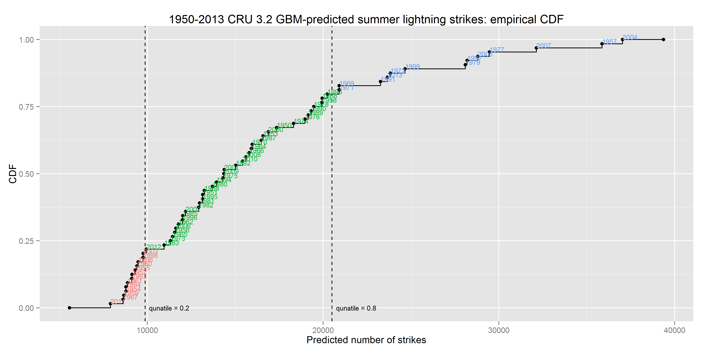
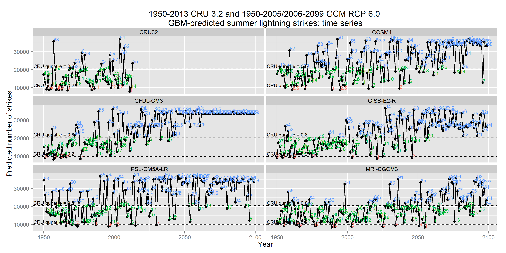

gbm_lightning_coefficients.R
The gbm_lightning_coefficients.R script assembles GBM lightning strike point model historical fitted values and backcast and forecast predictions. Historical and future values are loaded via workspace file.
The script also provides exploratory graphs of the assembled data. It presents the discrete classification of annual lightning intensity with several visualizations including time series, ranked and ordered values, and empirical CDF.
Plots are made of exclusively CRU 3.2-based fitted values and backcast predictions. Similar multi-panel plots are then made comparing each of five CMIP5 GCMs’ predicted values with CRU 3.2 as a comparative baseline.
The finalized compiled data table including discrete classified annual lightning intensity coefficients is saved to a new workspace to be sourced by other scripts. For example, it is sourced by FlammabilityMapMultipliers.R for applying a scalar multiplier to GBM vegetation flammability maps used in ALFRESCO simulations.
R code
Setup
setwd("C:/github/Flammability/workspaces")
dir.create(plotDir <- "../plots/lightning", showWarnings = FALSE)
load("hist_rcp60_lightning_preds.RData")
library(reshape2)
library(ggplot2)
library(data.table)
library(dplyr)Support functions
get_classes1 <- function(x, y = qtiles) cut(x, breaks = c(0, y, 99999), labels = F)
get_coefficients <- function(x, b = bounds, use.ecdf = TRUE) {
if (use.ecdf)
return(ecdf(x)(x)) # x represents lightning values
b <- c(0.01, b, 1) # x represents bin integers
# sapply(x, function(y) switch(y, '1'=0.05, '2'=0.5, '3'=0.95))
sapply(x, function(y, b) runif(1, b[y], b[y + 1]), b = b)
}
get_classes2 <- function(x) factor(x, labels = c("Low", "Medium", "High"))Quantiles and classification
bounds <- c(0.2, 0.8)
qtiles <- quantile(pred.light.hist, bounds)
bins.cru <- get_classes1(pred.light.hist)
coef.cru <- get_coefficients(pred.light.hist)
bins.cru <- get_classes2(bins.cru)
d <- data.table(Period = "historical", Model = "CRU32", Year = 1950:2013, LightPred = pred.light.hist,
Rank = rank(pred.light.hist), Class = bins.cru, Coef = coef.cru, ECDF = ecdf(pred.light.hist)(pred.light.hist))CRU 3.2 plots
(g1 <- ggplot(data = d, aes(x = Rank, y = LightPred, label = Year)) + geom_hline(yintercept = qtiles,
linetype = 2) + geom_point() + geom_text(aes(colour = Class), hjust = 0,
vjust = 0, size = 3, show_guide = F) + annotate("text", x = 1, y = qtiles,
label = paste("qunatile =", bounds), size = 3, vjust = -0.5) + labs(x = "Predicted rank",
y = "Predicted number of strikes", title = "1950-2013 GBM-predicted summer lightning strikes: ranked and ordered"))
(g2 <- ggplot(data = d, aes(x = Year, y = LightPred, label = Rank)) + geom_line() +
geom_hline(yintercept = qtiles, linetype = 2) + geom_point() + geom_text(aes(colour = Class),
hjust = 0, vjust = 0, size = 3, show_guide = F) + annotate("text", x = 1950,
y = qtiles, label = paste("qunatile =", bounds), size = 3, vjust = -0.5) +
labs(x = "Year", y = "Predicted number of strikes", title = "1950-2013 GBM-predicted summer lightning strikes: time series"))
(g3 <- ggplot(data = d, aes(x = LightPred, label = Year)) + geom_vline(xintercept = qtiles,
linetype = 2) + stat_ecdf() + stat_ecdf(geom = "point") + geom_text(aes(y = ECDF,
colour = Class), hjust = 0, vjust = 0, size = 3, show_guide = F) + annotate("text",
x = qtiles, y = 0, label = paste("qunatile =", bounds), size = 3, hjust = -0.1) +
labs(x = "Predicted number of strikes", y = "CDF", title = "1950-2013 GBM-predicted summer lightning strikes: empirical CDF"))
RCP 6.0 CMIP5 GCM comparisons with CRU 3.2
d2 <- data.table(lightning.preds)
d2 <- data.table(melt(d2, measure.vars = names(d2)))
d2[, `:=`(Period, "rcp60")]
d2[, `:=`(Year, 2010:2099)]
setnames(d2, c("Model", "LightPred", "Period", "Year"))
d2 <- d2 %>% filter(Year >= 2014) %>% group_by(Model) %>% mutate(Rank = rank(LightPred),
Class = get_classes1(LightPred), Coef = get_coefficients(LightPred), ECDF = ecdf(LightPred)(LightPred)) %>%
mutate(Class = get_classes2(Class)) %>% setcolorder(names(d))
d.all <- rbind(d, d2)(g4 <- ggplot(data = d.all, aes(x = Rank, y = LightPred, label = Year)) + geom_hline(yintercept = qtiles,
linetype = 2) + geom_point() + geom_text(aes(colour = Class), hjust = 0,
vjust = 0, size = 3, show_guide = F) + annotate("text", x = 1, y = qtiles,
label = paste("CRU qunatile =", bounds), size = 3, hjust = 0.25, vjust = -0.25) +
labs(x = "Predicted rank", y = "Predicted number of strikes", title = "1950-2011 CRU32 and 2014-2099 GCM GBM-predicted summer lightning strikes: ranked and ordered") +
facet_wrap(~Model, ncol = 2))
(g5 <- ggplot(data = d.all, aes(x = Year, y = LightPred, label = Rank)) + geom_line() +
geom_hline(yintercept = qtiles, linetype = 2) + geom_point() + geom_text(aes(colour = Class),
hjust = 0, vjust = 0, size = 3, show_guide = F) + annotate("text", x = 1950,
y = qtiles, label = paste("CRU qunatile =", bounds), size = 3, hjust = 0.25,
vjust = -0.25) + labs(x = "Year", y = "Predicted number of strikes", title = "1950-2011 CRU32 and 2014-2099 GCM GBM-predicted summer lightning strikes: time series") +
facet_wrap(~Model, ncol = 2))
(g6 <- ggplot(data = d.all, aes(x = LightPred, label = Year)) + geom_vline(xintercept = qtiles,
linetype = 2) + stat_ecdf() + stat_ecdf(geom = "point") + geom_text(aes(y = ECDF,
colour = Class), hjust = 0, vjust = 0, size = 3, show_guide = F) + annotate("text",
x = qtiles, y = 0, label = paste("CRU qunatile =", bounds), size = 3, hjust = -0.1,
vjust = -0.125) + labs(x = "Predicted number of strikes", y = "CDF", title = "1950-2011 CRU32 and 2014-2099 GCM GBM-predicted summer lightning strikes: empirical CDF") +
facet_wrap(~Model, ncol = 2))